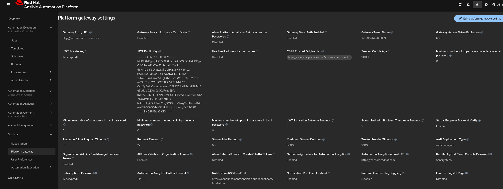
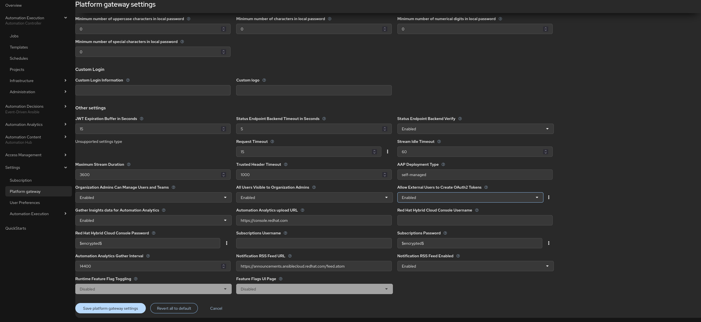
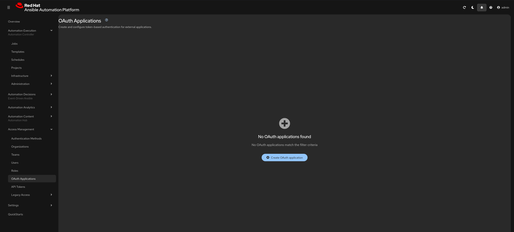
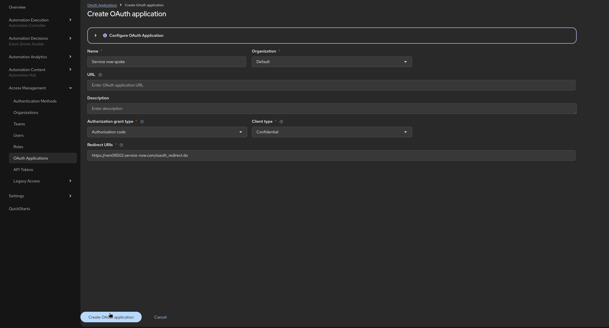
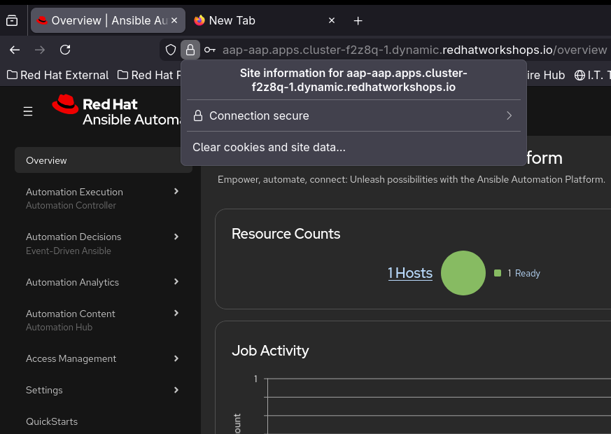
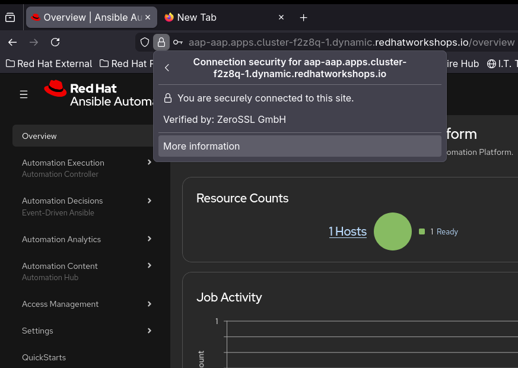
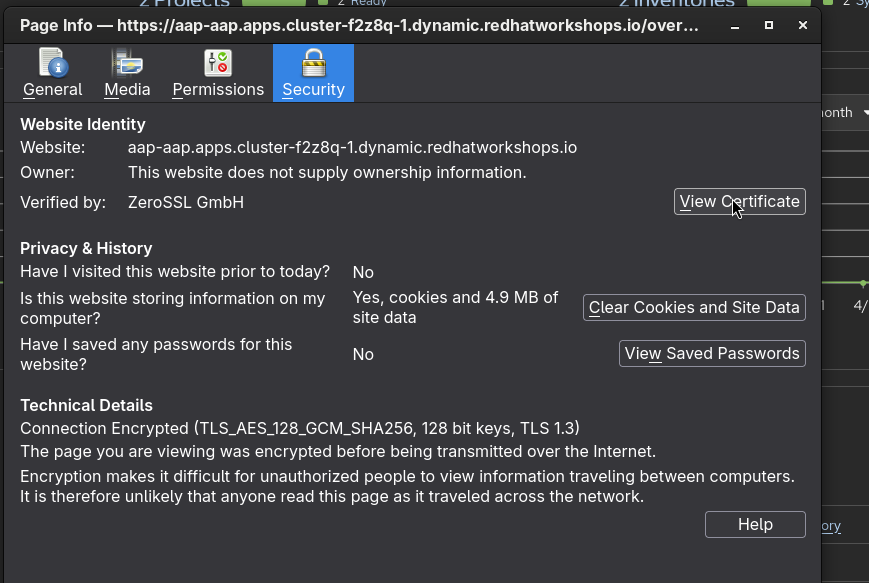
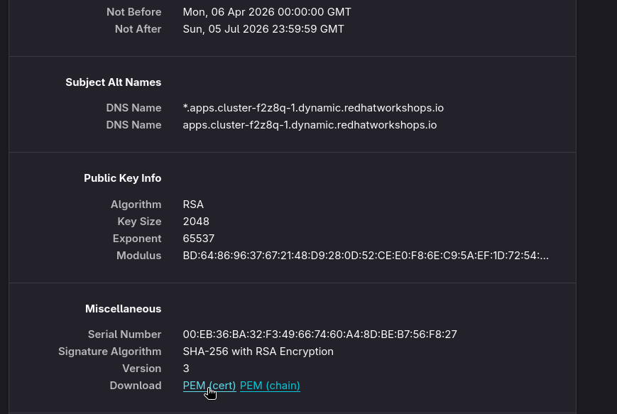

Ansible Automation platform Configuration
Integrating your ServiceNow instance with Ansible Tower (using the Ansible Spoke) enables you to automate Ansible-driven actions directly from ServiceNow. For example, you can design workflows that automatically or as per the requirement triggers or execute tasks on the Ansible Automation Platform based on user requirements.
Let’s look into what is needed to setup the OAuth for the Service now and settings on the AAP to make the integration smooth:
-
Log in to the Ansible Automation platform application instance using RHDP login page.
-
Go to Settings from the left-hand menu, then open Platform gateway settings. Click Edit at the top-left of the page, set
enabledon the option “Allow External Users to Create OAuth2 Tokens”, and finally click the blueSave platform gateway settingsbutton to apply the changes.

-
Navigate to Access Management → OAuth Applications from the left-hand panel. Click the blue
Create OAuth Applicationbutton at the center, which will open the Create Application dialog. Enter the details in the following manner and copy theClient IDandClient Secretsas its displayed only once to somewhere else for using that in ServiceNow:

-
lets Download the certificate from the Brwoser click on the Lock sign in the web bar and then click on Connection Secure and click on more information:


-
Self-signed certificates may not be accepted in all environments, so it is recommended to configure your Ansible Automation Platform (AAP) instance with a certificate issued by a trusted Certificate Authority (CA) while working with the ServiceNow.
-
We are using CA certificate in this Lab.
-
-
Now Click on View Certificate and go down to Miscellaneous and Download PEM (cert).


Thats all we need at the Ansible Automation platform side and now lets work on the Service now side in the next section.